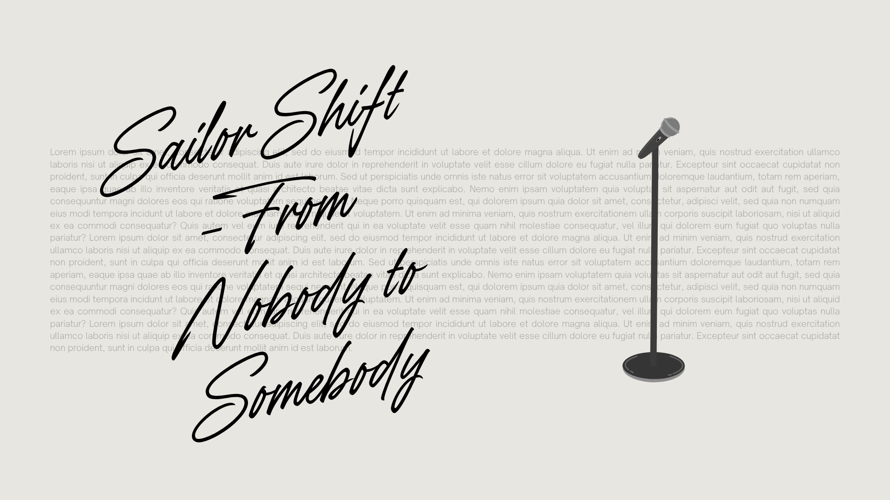

Sailor Shift Journey
Welcome to our ISSS608 Visual Analytics Final Project – AY2024/25 “Sailor Shift” Musical Journey Analysis.

Introduction
Sailor Shift: From Nobody to Somebody is a visual analytics project that traces the extraordinary musical journey of Sailor Shift, an Oceanus native who rose to international stardom. Starting from humble beginnings in the Oceanus Folk genre, Sailor became a global icon through her genre-blending style, viral hits, and influential collaborations.
This project explores:
Who influenced Sailor’s career over time?
Who did she influence directly or indirectly?
How did Oceanus Folk evolve and shape the wider music world?
Who are the next rising stars?
Through interactive dashboards, influence networks, and genre visualizations built using R Shiny, we present insights into Sailor’s impact on music, the genre’s transformation, and the future of Oceanus Folk.
Team
Peng Hsiao Yuan - hy.peng.2024@mitb.smu.edu.sg
Marga Thura - marga.thura.2024@mitb.smu.edu.sg
Software & Tools
Development Environment
RStudio – IDE for R programming and Shiny development RStudio: https://rstudio.com/
Frameworks & Dashboards
Shiny – Interactive web applications shinydashboard – Dashboard layout framework
Data Manipulation
dplyr – Data transformation tidyr – Data tidying stringr – String operations readr – Efficient data import
Visualization
ggplot2 – Grammar of graphics plotly – Interactive plots visNetwork – Network graph visualization ggraph – Graph visualizations with tidygraph support
Network & Graph Analysis
tidygraph – Tidy data structure for graph data
References
https://thehabaritanzania.netlify.app/
https://wiki.smu.edu.sg/1920t2isss608/Group11_user_guide
https://cran.r-project.org/web/packages/circlize/index.html
https://clauswilke.com/dataviz/
https://ggplot2.tidyverse.org//index.html
https://isss608-ay2024-25apr.netlify.app/th_ex/mc1-kickstarter
https://vast-challenge.github.io/2025/MC1.html